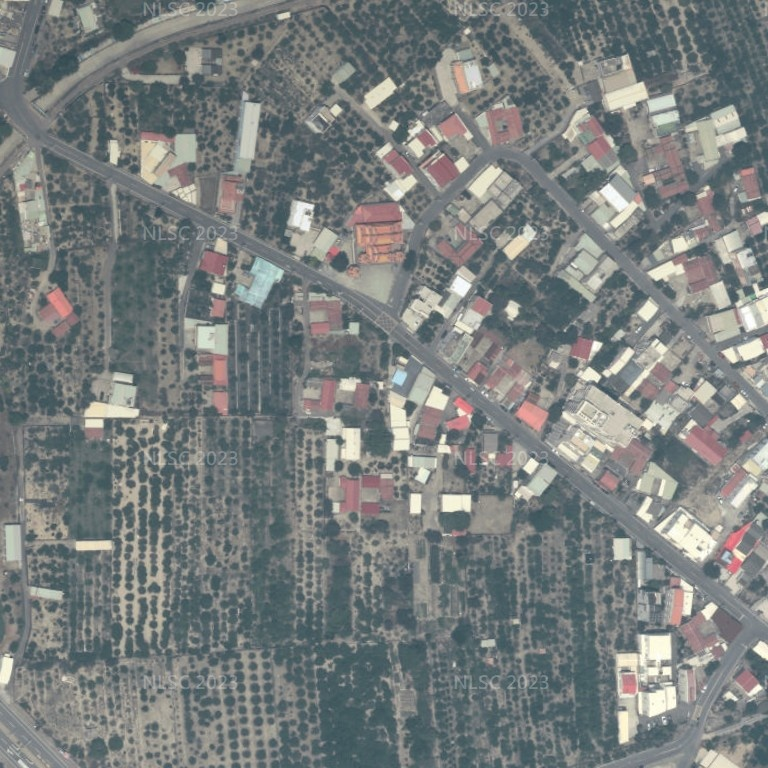

← 回到住宅模型住宅實景化 · 來源與檢查範圍
更新：2026 年 9 月 10 日（台灣時間）。這是可旋轉的即時 3D 概念模型，不是完工照片或測量成果。
建築以已確認請照圖為準；周邊依實際影像近似重建。尚未達到整個環境與實景逐處一致的攝影寫實程度，尤其龍泉巖雕刻、鄰房背面、精確門窗尺寸與高樓層遠景仍需補充資料。
這次直接加入模型的改善
| 部分 | 內容 |
|---|
| 所有風格與視角 | 日光、天空環境反射、陰影、較自然的曝光；細緻模式增加接觸陰影，手機模式降低運算量。 |
| 建築與家具材質 | 嵌入木紋、織布、皮革、灰泥、水泥與柏油的色彩、法線、粗糙度貼圖，下載 GLB 也保留貼圖。 |
| 家具形體 | 沙發曲面軟墊、細縫邊、枕頭、棉被起伏、彎曲葉片及較平滑的圓柱。 |
| 基地周邊 | 龍泉巖、白色住宅、紅瓦低層住宅、巷道、果園、樹木、圍牆、電桿及架空線；可獨立隱藏。 |
| 原有功能 | 四套家具方案、樓層與屋頂隱藏、剖面、旋轉、縮放與 GLB 下載繼續保留。 |
位置與方位
已改用您提供的四個國土測繪圖資點選座標，以旋轉及平移將原模型基地對齊；建築尺寸沒有縮放或變形。四點與原模型近似基地輪廓的平均平方根誤差為 1.06 公尺，最大 1.72 公尺。輸入精度為 0.1 秒（約 3 公尺），不是測量成果，仍不足以證明產權界線。
| 點 | 經度 WGS84 | 緯度 WGS84 |
|---|
| 1 | 120.25725000 | 23.17833333 |
| 2 | 120.25741667 | 23.17819444 |
| 3 | 120.25730556 | 23.17805556 |
| 4 | 120.25716667 | 23.17816667 |
方位另以請照圖採光檢討表核對：左側東北、後側東南、右側西南、正面西北。對位方法與誤差紀錄。
資料來源與日期

圖片中央附近為基地、龍泉巖及道路。此影像只供核對平面關係，不作為立面照片或產權界線。
本次用途與配置修正
11 項修正及檢查清單。房間用途與靠門小便斗依使用者最新指示優先於原圖名稱。移除舊示意道路，鄰房依使用者確認恢復三側近接關係，馬路與住宅及私人鋪面分離。最新位置、路緣電桿及門口淨空修正。間距為概念假設，不代表新的實測位置。
周邊重建清單
| 項目 | 可信範圍與限制 |
|---|
| 龍泉巖 | 寺廟量體、重簷屋頂與前埕；雕刻尚未精細重建 |
| 北側紅瓦平房 | 量體、材質及樓層為近似；門窗非實測 |
| 東側白色舊住宅 | 量體、材質及樓層為近似；門窗非實測 |
| 南側白色三層住宅 | 量體、材質及樓層為近似；門窗非實測 |
| 北巷白色住宅 | 量體、材質及樓層為近似；門窗非實測 |
| 東南側低層住宅 | 量體、材質及樓層為近似；門窗非實測 |
| 東南側住宅群一 | 量體、材質及樓層為近似；門窗非實測 |
| 東南側住宅群二 | 量體、材質及樓層為近似；門窗非實測 |
| 東側住宅 | 量體、材質及樓層為近似；門窗非實測 |
| 東北住宅一 | 量體、材質及樓層為近似；門窗非實測 |
| 北側低層住宅 | 量體、材質及樓層為近似；門窗非實測 |
| 東北住宅二 | 量體、材質及樓層為近似；門窗非實測 |
| 道路南側鐵皮農舍 | 量體、材質及樓層為近似；門窗非實測 |
| 道路西側低層住宅 | 量體、材質及樓層為近似；門窗非實測 |
| 路口南側建物 | 量體、材質及樓層為近似；門窗非實測 |
| 東南側中層住宅 | 量體、材質及樓層為近似；門窗非實測 |
| 道路／巷道 | 依正射影像配置，寬度估算 |
| 道路／巷道 | 依正射影像配置，寬度估算 |
| 道路／巷道 | 依正射影像配置，寬度估算 |
| 道路／巷道 | 依正射影像配置，寬度估算 |
| 果園與道路樹木 | 果園分布與樹冠近似；非逐株測量 |
| 路燈電桿與架空線 | 可見電桿與架空線近似，非管線測量 |
模型檢查清單
- 材質處理前後：各建築三角形位置應完全相同，僅分割／合併貼圖接縫頂點；驗證見 材質驗證紀錄。
- 四套風格共用相同建築；不得為家具或周邊移動牆面、門窗。
- 測試旋轉、缩放、樓層與屋頂隱藏、周邊開關、四套方案、手機版控制面板及離線載入。
- 陰影應隨隱藏樓層更新；剖面時停用會受裁切干擾的接觸陰影，仍保留日光投影。
- 手機效能測試為瀏覽器觸控模擬，未宣稱已在使用者實體安卓手機通過驗收。
- 缺少基地四角測量座標、鄰房高度與立面照片、各樓層窗外／露台的完整環景；無法據此保證每個方向都與實景一致。
周邊來源資料 · 下載周邊 GLB · 原 101 項圖面修正紀錄